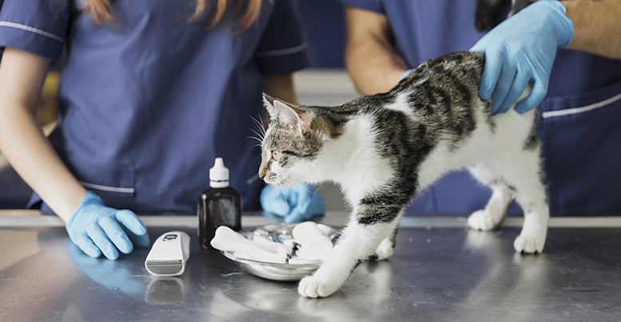
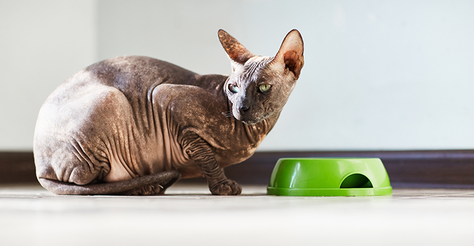

Две статьи начинающим(и не только!) хозяевам кошек
Домашняя аптечка для кошки

С появлением кошки в доме владельцу нужно приобрести несколько индивидуальных аксессуаров для животного – посуду, лоток, средства гигиены, расческу, игрушки и т. д. Обязательный атрибут для нового пушистого жителя – медицинская аптечка.
В статье мы рассмотрим, почему нужно иметь дома аптечку для оказания первой и профилактической помощи кошке, как и чем ее правильно укомплектовать.
Комплектация кошачьей аптечки
Собрать медицинскую аптечку для кошки совсем не трудно. Предлагаем ознакомиться с перечнем самых необходимых средств и материалов, которые могут пригодиться для оказания первой помощи.
Материалы для перевязки
При любых травмах и ранениях понадобятся материалы для перевязки – марля, бинты, вата, лейкопластырь,
а также небольшой резиновый жгут. Эти средства могут быть использованы для обработки раны, наложения повязки и остановки кровотечения.
Инструменты
В аптечке домашнего питомца также должны находиться некоторые медицинские инструменты разного назначения.
Что положить в аптечку:
- Одноразовые шприцы – пятикубовые, двухкубовые, инсулиновые. Они могут пригодиться не только для инъекционного введения медпрепаратов, но и для внутреннего приема (со шприцов лекарства удобно заливать в пасть кошки).
- Электронный или спиртовой градусник. Температура кошке измеряется через анальное отверстие, поэтому ни в коем случае нельзя использовать обычный ртутный термометр, который может случайно разбиться во время процедуры. Ртуть – сильнейший яд для кошки, при попадании в организм животного могут случиться самые опасные последствия.
- Резиновые груши – 2 штуки. Одна используется для клизмы, вторая – для промывания зрительных органов.
- Пипетки – для закапывания лечебных капель в глазки, ушки питомца.
- Ножницы с тупыми кончиками для аккуратного срезания шерстки в области раны.
- Анатомический пинцет – для дренирования свищей и абсцессов.
- Одноразовые резиновые перчатки для человека, который будет оказывать медицинскую помощь кошке.
Медикаменты
В медицинской аптечке обязательно присутствуют лекарственные средства для оказания первой помощи домашней кошке.
Необходимые медикаменты для комплектации аптечки:
-
Антигистаминные препараты: Зиртек, Зодак. Снижают аллергическую реакцию, имеют слабый седативный эффект.
-
Адсорбенты – выводят из организма токсины. Из этой группы: Энтеросгель, Смекта, Полисорб, активированный уголь
-
Обезболивающие: Кетофен, Ветальгин. Применяются при болях разной этиологии.
-
Противорвотные препараты: Но-Шпа, Церукал. Подавляют рвотный рефлекс.
-
Гормональные средства: Преднизолон, Дексаметазон. Снимают аллергическую реакцию немедленного типа, выводят из болевого шока.
-
Антисептики: йод, хлоргексидин, перекись водорода. Необходимы для обработки ран, абсцессов, дезинфицируют кожу.
-
Иммуностимуляторы – повышают резистентность организма к вирусам и патогенным бактериям, укрепляют иммунную систему. Неплохие препараты этой группы: Иммунофан, Анандин.
Миски для кошек

У каждой домашней кошки должна быть индивидуальная посуда. Ей понадобится миска для еды и воды. Производители предлагают большой выбор мисок для кошек из разных материалов. Каждое изделие характеризуется определенными параметрами качества.
В статье мы рассмотрим, какие бывают миски для котов, их плюсы и минусы, почему при выборе миски важно учитывать породу и размеры кошек.
Виды мисок для кошек: преимущества и недостатки
Покупая миску для домашней кошки, нужно обращать внимание на ее качество. От этого параметра зависит не только практичность и длительность эксплуатации прибора, но и здоровье питомца. Некачественные изделия могут выделять в пищу токсичные вещества, ядовитые для организма. Чтобы ваша кошка прожила долгую и счастливую жизнь, отнеситесь к выбору посуды со всей серьезностью.
Металлические миски
Звонкие и легкие металлические миски для животных имеют прорезиненное основание. Имеют длительный срок службы.
Плюсы:
- гигиеничны;
- изделия из нержавеющей стали абсолютно безопасны для организма животного;
- легко моются;
- не остается царапин на покрытии.
Минусы:
- небольшой выбор дизайнов;
- звонкие и шумные при кормлении;
- нельзя разогревать пищу в таком посуде;
Керамические миски
Миски из керамики, стекла и фарфора разнообразны в оформлении, имеют симпатичный дизайн. Некоторые владельцы используют в качестве миски для питомца обычную домашнюю тарелку или блюдце. Можно приобрести специальный прибор для животных удобной формы и размера.
Другие плюсы:
- безопасны для здоровья
- легко очищаются
- можно быть в посудомоечной машине
Минусы
- миску из стекла, керамики и фарфора легко разбить, поэтому эксплуатировать прибор для кормления кошки нужно аккуратно;
- могут нагреваться при подогреве в микроволновке;
- по сравнению с другими вариантами посуды для кошек стоят достаточно дорого.
Пластмассовые миски
Пластиковые миски – самый распространенный вариант, используемый владельцами домашних кошек. Такие изделия реализуются по низкой цене. В ассортименте представлена пластмассовая посуда для кошек разнообразных форм и расцветок. Но прежде чем купить такую миску своему питомцу, изучите недостатки пластиковых изделий.
Минусы:
- дешевый пластик небезопасен для организма животных;
- могут иметь неприятный специфический запах и выделять вредные вещества;
- впитывают запахи пищи;
- во время эксплуатации могут гнуться, трескаться и ломаться;
- пористая структура пластика благоприятна для размножения патогенных бактерий;
Какую миску выбрать для кошки?
При выборе миски для домашнего питомца нужно смотреть не только на дизайн и материал изделия, но и подобрать оптимальную высоту и размеры посудины.
После чего, соизмерив все плюсы и минусы попытаться, сделать правильный выбор!